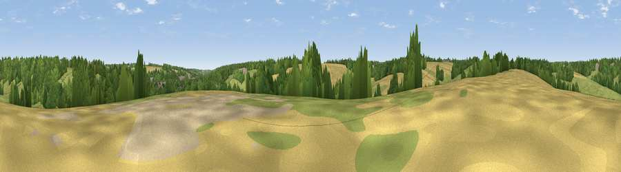

Viewpoint near Chesham
#44811 in England · top 90% of its area beats it · near CheshamThe view, rendered

A 360° render of this exact spot computed from the terrain model, tree cover and land cover — summer colours, afternoon light, calibrated against photographs of famous viewpoints. Real trees, hedges and buildings will differ in detail.
The panorama
Grey silhouette: terrain skyline in each direction (720 bearings, Earth curvature and refraction included). Dashed green: skyline with trees (+15 m) and buildings (+8 m) as obstacles. Blue strip: how far the ground is visible on each bearing.
Where the view opens
Wedge length = distance to the farthest visible ground on that bearing (vegetation-aware). Rings at 10, 25 and 50 km.
What fills the view
38% woodland · 31% grassland · 27% cropland · 3% built-up
Angular shares of the visible panorama (visual magnitude), not map area. Landscape diversity 0.53 (0–1 Shannon).
Key numbers
More beautiful places nearby
The staircase of upgrades: each row has a higher view potential than everything closer. Driving times are estimates from straight-line distance, calibrated against real road routing — check an actual route before setting out.
| Place | Direction | Drive | Score |
|---|---|---|---|
| Viewpoint near Chesham | ENE · 1 km | ~3 min | 24.3 |
| Viewpoint near Asheridge | N · 1 km | ~4 min | 25.1 |
| Viewpoint near Chesham | E · 2 km | ~4 min | 27.0 |
| Viewpoint near Coleshill | S · 6 km | ~12 min | 40.0 |
| Pavis Wood | NNW · 8 km | ~17 min | 45.0 |
| Viewpoint near Tring | NNW · 9 km | ~17 min | 52.5 |
| Viewpoint near Tring | NNW · 9 km | ~18 min | 55.1 |
| Viewpoint near Wendover | NW · 9 km | ~18 min | 67.6 |
51.70449, -0.63133 · source: screening · position refined by local search. Computed location — check access rights before visiting.